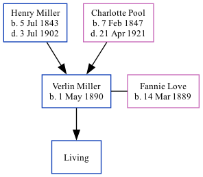

Verlin Miller 1890 -
[ Home ] | [ Calendar ] | [ Surnames Index ] | [ Family History ]The son of Henry Miller and Charlotte PoolVerlin Miller, the third cousin three-times-removed on the mother's side of Nigel Horne, was born in Clay, Indiana, USA on May 1, 18901 and. He married Fannie Love (with whom he had 1 surviving child) in Clay in 19151.
Throughout his life, he lived in Owen, Indiana, USA on Jun 1, 19002; and at Howesville Road, Lewis, Indiana on Jan 1, 19203.
Parents
- Henry William Charles was born on Jul 5, 1843
- Charlotte Maria was born on Feb 7, 1847
Citations
- United States Marriages - Findmypast
- US Census 1900 - Findmypast (was the son of the head of the household)
- US Census 1920 - Findmypast (was age 29 and the head of the household)
Media
US Census 1920 - USC/1920/004964848/00152/092
United States Marriages - FS/MAR/37204090/1
United States Marriages - R_1128510951
United States Marriages - R_1128510951/1
Family Tree
Generated by ged2site. Last updated on Nov 13, 2024